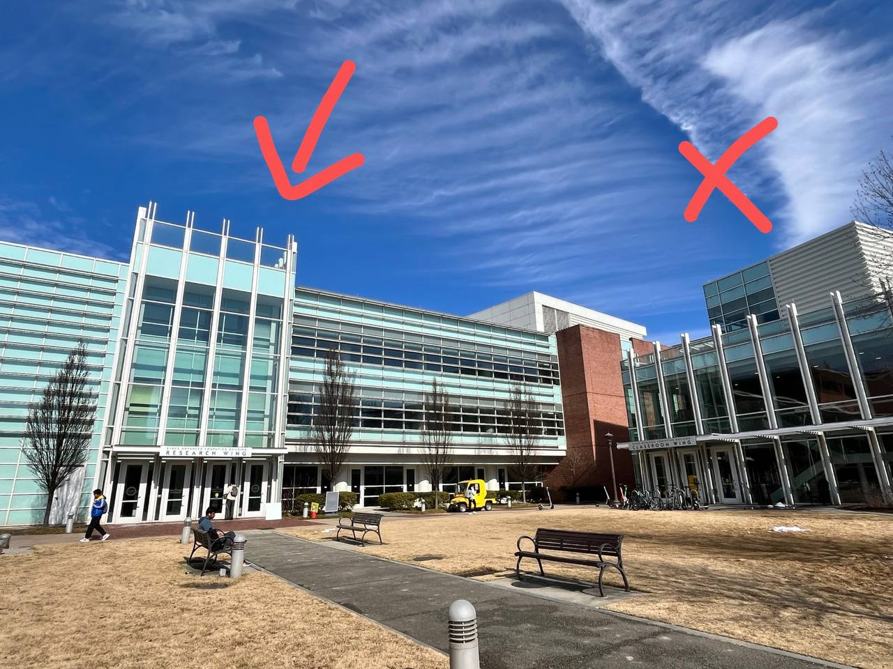
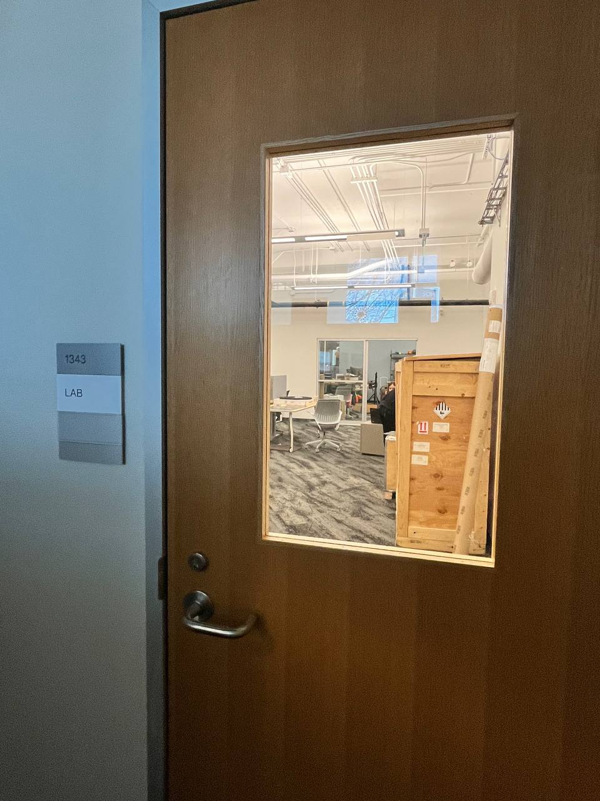

Thank you for your interest in participating in our study. Before you sign up, please ensure you meet the following requirements:
While not mandatory, we would appreciate it if you could bring your own laptop to the study.
Our lab is located in Room 1343, Klaus Advanced Computing Building, Research Wing. Follow these steps to find us:
Use the main entrance of the Klaus Advanced Computing Building.
To avoid disrupting ongoing experiments in the main lab area, please take a detour directly to the back door of our lab. Refer to the maps below for the route.
Once you reach the back door of Room 1343, we'll open it for you at your scheduled time.
If you have trouble finding us or need help, don't hesitate to contact:
One of us will be in the lab to assist you during your visit.
We look forward to seeing you and appreciate your contribution to our research!